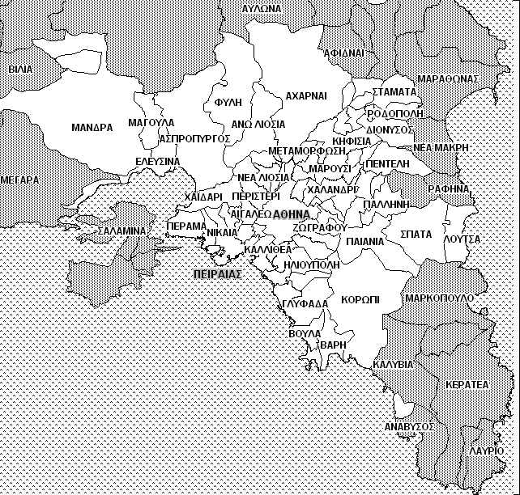

Οι Συγκοινωνίες Αθηνών είναι οι δημόσιες υπηρεσίες μετακίνησης, που προσφέρουν οι Ο.Α.Σ.Α., ΣΤΑ.ΣΥ. (μετρό, ηλεκτρικός και τραμ) και Ο.ΣΥ. (λεωφορεία και τρόλεϊ), οι οποίες λειτουργούν με τρόπο ενιαίο για να κάνουν πραγματικότητα την ιδέα: «Μια πόλη. Ένα δίκτυο.».
Η περιοχή που εξυπηρετείται σήμερα με αστική συγκοινωνία από τον Όμιλο ΟΑΣΑ είναι ο Νομός Αττικής»
